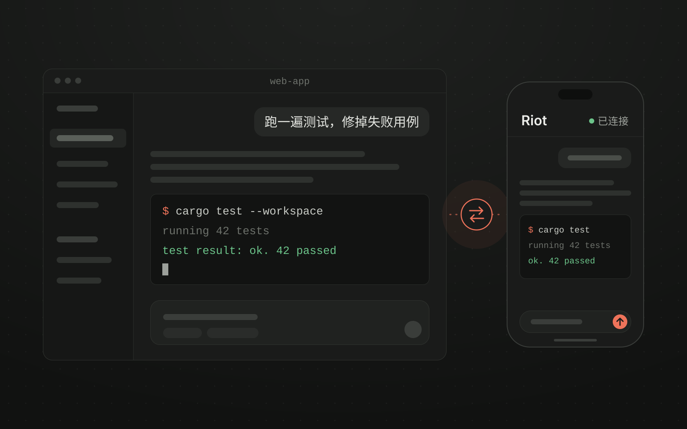
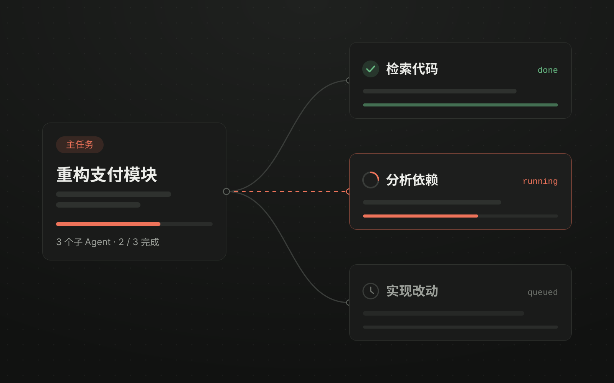
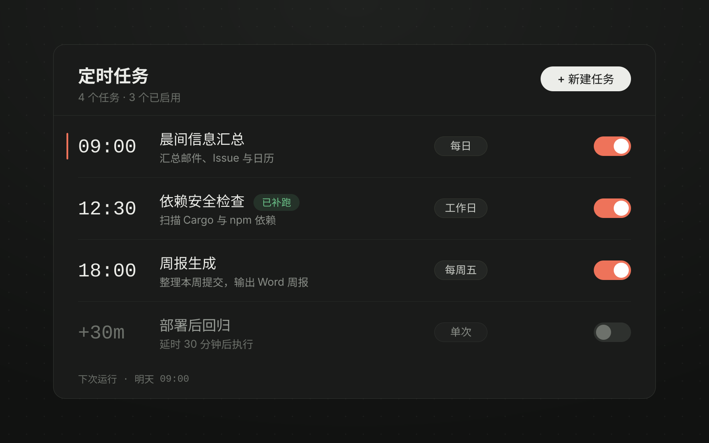
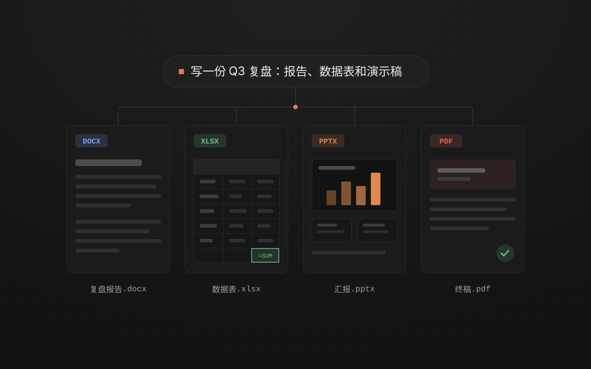
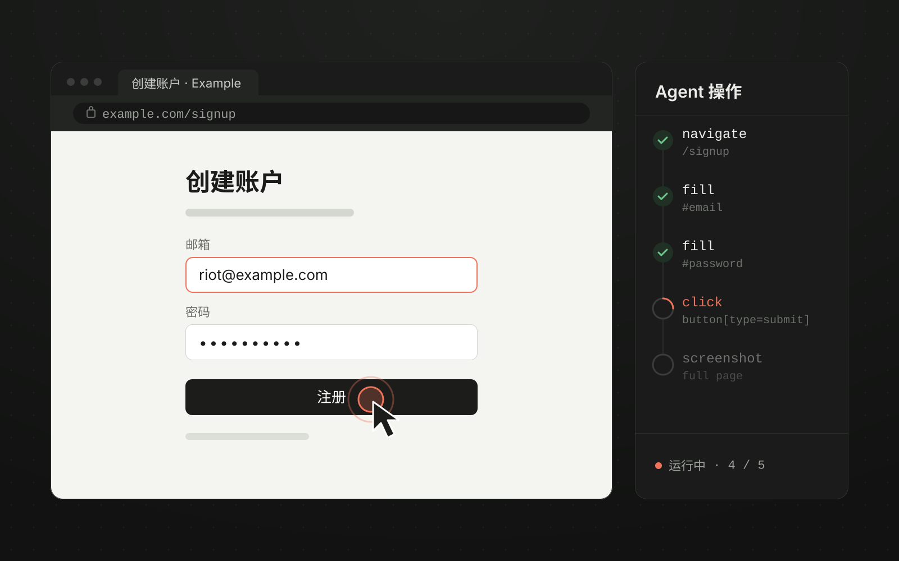
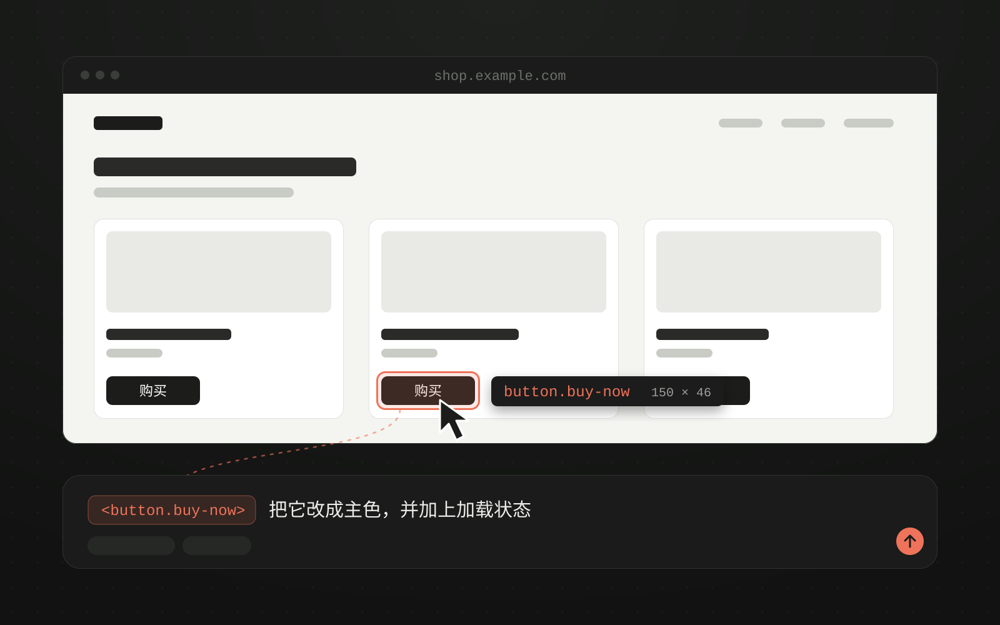
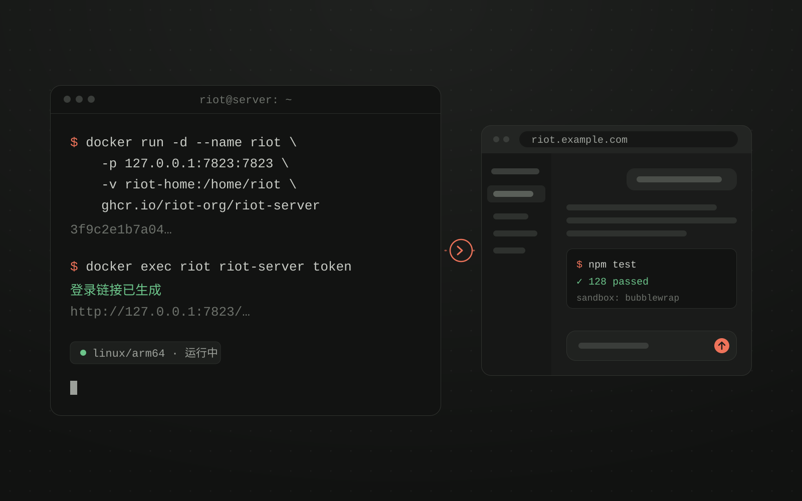
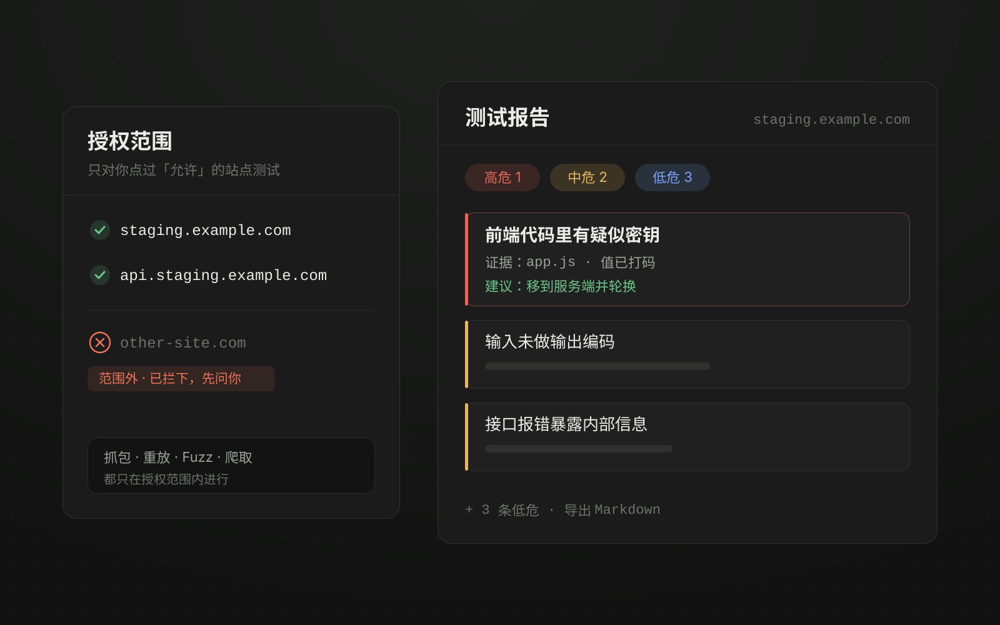

远程连接
01
在手机上接着用桌面上的会话
用手机或另一台电脑的浏览器连上正在运行的 Riot，会话、终端和浏览器面板保持同步。任务还在原来那台机器上跑。
可接入
01 / 功能

用手机或另一台电脑的浏览器连上正在运行的 Riot，会话、终端和浏览器面板保持同步。任务还在原来那台机器上跑。

检索、分析、实现分给不同的子 Agent 在后台跑，主任务负责协调，结果回到同一个工作空间。

可以设成每天、工作日、每周或指定时间，也可以延时触发。错过的运行会自动补上。

新建和修改都行。装上文档运行时后，公式计算、排版渲染和检查也在本机完成。

内置 Chromium。导航、点击、填表、截图、执行 JavaScript 都能在对话里调用，每一步都显示在浏览器面板上。

悬停高亮，点击选中，元素的选择器和结构会附进对话。

电脑合上了，任务照样在跑。把 Riot 部署到 Linux 服务器（Docker 镜像，x86_64 / arm64），配合定时任务按计划自己干活；想看进度或接着聊，用手机或电脑的浏览器随时连上去。

内置爬取、Fuzz、密钥泄露扫描等渗透工具，发现按严重度整理成带证据和修复建议的报告。渗透动作只打你授权过的目标，范围外即使开了「全部放行」也会先问你。
02 / 安全
工具在本机运行。用远程模型时，任务需要的上下文会发给你配置的模型服务。
从每步都问到无人值守，按任务选。不管哪一档，敏感操作都会先问你。
Agent 内核和界面是两个进程。内核出错时窗口照常可用，不用重开。
工具执行失败时，报错会回到对话里，Agent 根据报错继续修正。
03 / 下载
选择你的系统。
Apple Silicon · .dmg
拖进「应用程序」，填上模型 API Key 就能用。
下载 macOS 版Windows 10 / 11 · x64
运行安装程序，填上模型 API Key 就能用。
下载 Windows 版Docker 镜像 · x86_64 / arm64
docker pull ghcr.io/riot-org/riot-server:latest
个人与非营利用途免费，商业使用需另行授权。
源码与构建说明